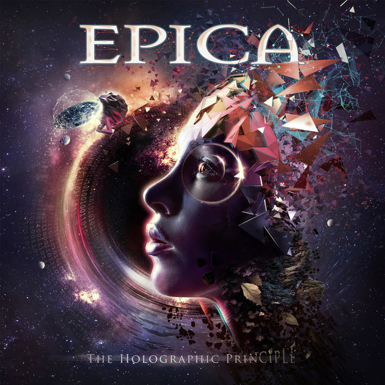

My Top5 Favorite Bands

No.1 Cradle of Filth

Cradle of Filth are an English extreme metal band, formed in Suffolk, England in 1991. The band's musical style evolved originally from black metal to a cleaner and more "produced" amalgam of gothic metal, symphonic metal and other metal genres. Their lyrical themes and imagery are heavily influenced by Gothic literature, poetry, mythology and horror films. The band has gone through many lineup changes, with vocalist Dani Filth being the only constant member.
Cradle of filth facebook pageNo.2 Behemoth

Behemoth is a Polish extreme metal band from Gdańsk, formed in 1991. They are considered to have played an important role in establishing the Polish extreme metal underground. Until the late 1990s, the band played a traditional black metal style with heathen lyrical content, but soon changed to that of occult and thelemic themes written by their lead vocalist Nergal and Krzysztof Azarewicz. With the 1999 release of Satanica, the band demonstrated their presence in the death metal scene, while retaining their own signature style characterized by the drum work of Inferno, multi-layered vocals and Middle-Eastern influences. Despite Behemoth having been labeled as death metal or thrash metal-influenced, Nergal has mentioned that he does not like the band to be labeled.
Blow Your Trumpets Gabriel, link:
Behemoth facebook pageNo.3 Carnifex

Carnifex is an American deathcore band from San Diego County, California. Formed in 2005, they are currently signed to Nuclear Blast after having been signed to Victory Records. They have released six full-length albums and one EP. The name of the band is derived from the Warhammer 40,000 Tyranids monster the "Carnifex".
Carnifex Facebook pageNO.4 Epica
Epica is a Dutch symphonic metaband, founded by guitarist and vocalist Mark Jansen after his departure from After Forever. Born as a symphonic metal band with gothic tendencies, later Epica have incorporated into their sound strong death metal influences. Starting from the third album, even progressive metal attitudes have become evident. In addition, the band often uses thrash metal and groove metal riffs, black metal passages (mostly in the drum technique), power metal moments and references to Arabic music. Some songs also have electronic shades, djent transitions and folk metal melodies derived from middle eastern, Chinese and Celtic traditions. Epica is also known for the attention to the vocal lines that, in contrast to the heavy context, weave very catchy, easy to hold, sophisticated and emotional melodies. In the band's sound the use of female vocals and male growls, performed by Simone Simons and Mark Jansen respectively, is fundamental. They primarily write their own lyrics, which often deal with philosophical, psychological, spiritual, moral, scientific, environmental, socio-political, global and topical and personal themes. Epica is also known for their wide use of orchestra and opera choirs.
Universal Death Squad, link: 
Epica facebook pageNo. 5 The Black Dahlia Murder
The Black Dahlia Murder is an American death metal band from Waterford, Michigan, formed in 2001. Their name is derived from the 1947 unsolved murder of Elizabeth Short, often referred to as Black Dahlia. The band currently comprises vocalist Trevor Strnad, guitarists Brian Eschbach and Brandon Ellis, drummer Alan Cassidy, and bassist Max Lavelle. Out of the eight studio albums they have released to date, the last seven have charted on the U.S. Billboard 200, with their fifth album Ritual peaking at No. 31 in 2011, marking them as one of the most popular contemporary American extreme metal bands. Their eighth and latest album Nightbringers was released on October 6.
The black dahlia murder facebook page